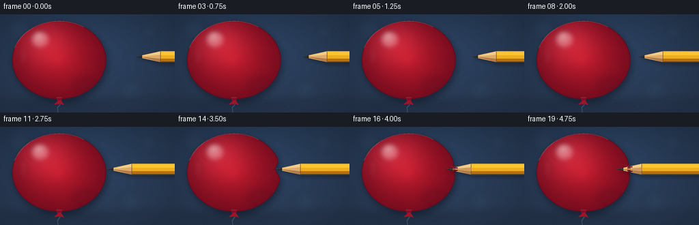
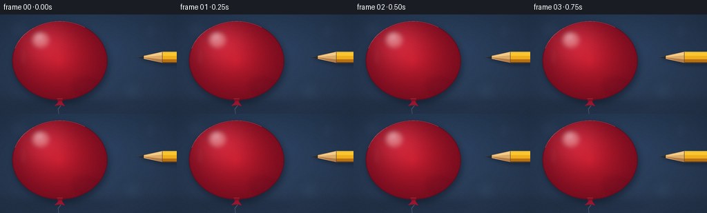
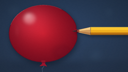
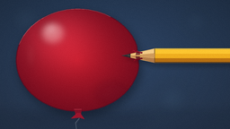

CODING AGENTS AS PIXEL WORLD MODELS
traex/GPT-5.6-Sol · phygen_025
点击播放 · 原生 RGB 像素
逐轮保存的候选
回放视频、检查图与代码变化。
每份候选均可单独播放。实际图片检查记录在下方工具轨迹中。
候选 01播放与检查图
点击播放 · 原生 RGB 像素


展开代码变化
--- 上一保存版本
+++ 本次保存版本
@@ -0,0 +1,226 @@
+from pathlib import Path
+import math
+import numpy as np
+from PIL import Image, ImageDraw, ImageFilter
+import artifact_io
+
+# Deterministic, supersampled vector/raster rendering.
+W, H, N = 256, 144, 20
+S = 4
+SW, SH = W*S, H*S
+ROOT = Path(__file__).resolve().parent
+
+def sc(v):
+ return int(round(v*S))
+
+def pts_scaled(points):
+ return [(sc(x), sc(y)) for x, y in points]
+
+def layer():
+ return Image.new("RGBA", (SW, SH), (0, 0, 0, 0))
+
+def composite(base, over):
+ return Image.alpha_composite(base, over)
+
+def balloon_contour(indent=0.0, breached=False):
+ """Clockwise inflated silhouette, locally deformed at pencil contact."""
+ cx, cy, rx, ry = 86.5, 67.0, 68.5, 57.0
+ axis_y = 62.0
+ out = []
+ for k in range(361):
+ a = 2*math.pi*k/360.0
+ ca, sa = math.cos(a), math.sin(a)
+ x = cx + rx*ca
+ y = cy + ry*sa
+ # Localized elastic dimple on the right wall.
+ if ca > 0:
+ vertical = math.exp(-((y-axis_y)/9.0)**2)
+ right_bias = ca**5
+ if breached:
+ # The wall springs most of the way back but hugs the pencil.
+ deform = 2.0 * vertical * right_bias
+ else:
+ deform = indent * vertical * right_bias
+ x -= deform
+ out.append((x, y))
+ return out
+
+def draw_curve(draw, points, fill, width):
+ draw.line(pts_scaled(points), fill=fill, width=sc(width), joint="curve")
+
+# A quiet blue studio backdrop with a soft floor glow.
+yy, xx = np.mgrid[0:SH, 0:SW]
+xn, yn = xx/S, yy/S
+rad = np.sqrt(((xn-126)/185)**2 + ((yn-57)/120)**2)
+base = np.zeros((SH, SW, 4), np.uint8)
+base[...,0] = np.clip(28 + 16*(1-rad) + 7*(yn/H), 18, 55)
+base[...,1] = np.clip(42 + 25*(1-rad) + 7*(yn/H), 27, 76)
+base[...,2] = np.clip(61 + 38*(1-rad) + 9*(yn/H), 42, 108)
+base[...,3] = 255
+background = Image.fromarray(base, "RGBA")
+
+# Defocused background lights.
+bokeh = layer(); bd = ImageDraw.Draw(bokeh)
+for x,y,r,c in [(218,24,11,(111,157,181,21)), (192,111,17,(94,138,163,18)),
+ (28,21,15,(116,152,173,14)), (231,72,6,(162,190,199,16)),
+ (122,17,5,(177,201,211,12))]:
+ bd.ellipse((sc(x-r),sc(y-r),sc(x+r),sc(y+r)), fill=c)
+bokeh = bokeh.filter(ImageFilter.GaussianBlur(sc(7)))
+background = composite(background, bokeh)
+
+# Surface/floor haze and contact shadow are static.
+floor = layer(); fd = ImageDraw.Draw(floor)
+fd.rectangle((0,sc(123),SW,SH), fill=(16,25,39,35))
+fd.ellipse((sc(20),sc(122),sc(168),sc(142)), fill=(7,10,18,45))
+floor = floor.filter(ImageFilter.GaussianBlur(sc(5)))
+background = composite(background, floor)
+
+# Pencil tip x positions: approach, elastic indentation, then slow penetration.
+tip_positions = [198,194,190,186,182,178,174,170,166,162,159,156,153,150,147,144,141,139,137,135]
+frames = []
+
+for fi, tip_x in enumerate(tip_positions):
+ img = background.copy()
+ axis_y = 62.0
+ rest_x = 154.8
+ contact = tip_x <= 159
+ breached = fi >= 15
+ indent = 0.0 if not contact else min(12.0, max(0.0, rest_x-tip_x))
+ if fi == 10:
+ indent = 0.7
+ if breached:
+ indent = 2.0
+
+ contour = balloon_contour(indent, breached)
+
+ # Balloon cast shadow, offset down-left, soft enough to preserve the clean contour.
+ sh = layer(); sd = ImageDraw.Draw(sh)
+ sd.polygon(pts_scaled([(x+2.5,y+4.5) for x,y in contour]), fill=(3,8,17,108))
+ sh = sh.filter(ImageFilter.GaussianBlur(sc(5)))
+ img = composite(img, sh)
+
+ # String goes behind the balloon and gently curves out of frame.
+ string = layer(); st = ImageDraw.Draw(string)
+ draw_curve(st, [(87,127),(88,132),(84,137),(85,144)], (122,131,145,130), 0.75)
+ draw_curve(st, [(87.4,127),(88.2,133),(84.7,138)], (220,224,225,38), 0.28)
+ img = composite(img, string)
+
+ # Create a high-detail balloon color field and clip it to the deformed silhouette.
+ mask = Image.new("L", (SW, SH), 0); md = ImageDraw.Draw(mask)
+ md.polygon(pts_scaled(contour), fill=255)
+ # Rich red latex: upper-left key light, edge falloff, and subtle translucency.
+ nx = (xn-86.5)/68.5; ny = (yn-67.0)/57.0
+ rr = np.sqrt(nx*nx + ny*ny)
+ light = np.exp(-(((xn-62)/42)**2 + ((yn-39)/35)**2))
+ edge = np.clip(rr,0,1)
+ field = np.zeros((SH,SW,4), np.uint8)
+ field[...,0] = np.clip(181 + 52*light - 63*edge + 5*(1-yn/H), 72, 238)
+ field[...,1] = np.clip(25 + 22*light - 12*edge, 9, 64)
+ field[...,2] = np.clip(42 + 24*light - 11*edge, 17, 77)
+ field[...,3] = np.array(mask)
+ img = composite(img, Image.fromarray(field,"RGBA"))
+
+ # Soft reflected light and glossy latex highlights, also clipped to silhouette.
+ gloss = layer(); gd = ImageDraw.Draw(gloss)
+ gd.ellipse((sc(42),sc(22),sc(78),sc(54)), fill=(255,238,235,0))
+ gd.ellipse((sc(45),sc(24),sc(71),sc(48)), fill=(255,245,239,92))
+ gd.ellipse((sc(52),sc(27),sc(61),sc(37)), fill=(255,255,251,150))
+ gd.ellipse((sc(30),sc(47),sc(38),sc(76)), fill=(255,183,182,24))
+ gd.ellipse((sc(106),sc(91),sc(142),sc(116)), fill=(81,12,36,38))
+ gloss = gloss.filter(ImageFilter.GaussianBlur(sc(4)))
+ gloss.putalpha(Image.composite(gloss.getchannel('A'), Image.new('L',(SW,SH),0), mask))
+ img = composite(img, gloss)
+
+ # Crisp outer membrane edge; brighter on top-left, darker along lower-right.
+ edge_layer = layer(); ed = ImageDraw.Draw(edge_layer)
+ ed.line(pts_scaled(contour+[contour[0]]), fill=(91,13,34,210), width=sc(1.25), joint="curve")
+ top_arc=[]
+ for deg in range(198,303,2):
+ a=math.radians(deg); top_arc.append((86.5+68.5*math.cos(a),67+57*math.sin(a)))
+ ed.line(pts_scaled(top_arc), fill=(255,138,141,92), width=sc(0.65))
+ img = composite(img, edge_layer)
+
+ # Balloon neck and tied knot, visibly supporting the inflated form.
+ knot = layer(); kd = ImageDraw.Draw(knot)
+ kd.polygon(pts_scaled([(82.3,121.0),(91.0,121.0),(90.0,127.4),(84.0,127.8)]), fill=(126,17,39,255))
+ kd.polygon(pts_scaled([(85.8,126.0),(78.8,132.2),(88.5,131.2),(94.0,133.0),(89.2,126.1)]), fill=(156,21,45,255))
+ kd.line(pts_scaled([(82.5,122),(90.5,122)]), fill=(241,81,91,105), width=sc(.65))
+ img = composite(img, knot)
+
+ # Stretch sheen and fine stress folds appear as the latex dimples.
+ if contact and not breached:
+ stress = layer(); std = ImageDraw.Draw(stress)
+ strength = min(1.0, indent/8.0)
+ for off, alpha in [(-7,38),(-4,56),(4,56),(7,38)]:
+ x0 = rest_x-12-indent*0.25
+ x1 = rest_x-2-indent*0.72
+ draw_curve(std, [(x0,axis_y+off*1.25),(x1,axis_y+off*.72),(rest_x-indent,axis_y+off*.20)],
+ (255,136,143,int(alpha*strength)), .55)
+ stress = stress.filter(ImageFilter.GaussianBlur(sc(.25)))
+ img = composite(img, stress)
+
+ # Pencil's soft shadow falls on the balloon/background just below the shaft.
+ pencil_shadow = layer(); psd = ImageDraw.Draw(pencil_shadow)
+ cone_end = tip_x + 37
+ psd.polygon(pts_scaled([(tip_x+2,axis_y+2),(cone_end,axis_y-5),(270,axis_y-5),
+ (270,axis_y+12),(cone_end,axis_y+12)]), fill=(7,9,15,72))
+ pencil_shadow = pencil_shadow.filter(ImageFilter.GaussianBlur(sc(2.4)))
+ img = composite(img, pencil_shadow)
+
+ # Pencil itself: graphite tip, exposed cedar, and a faceted yellow lacquer body.
+ pen = layer(); pd = ImageDraw.Draw(pen)
+ # Wooden cone.
+ pd.polygon(pts_scaled([(tip_x,axis_y),(cone_end,axis_y-8),(cone_end,axis_y+8)]), fill=(221,172,105,255))
+ pd.polygon(pts_scaled([(tip_x+7,axis_y),(cone_end,axis_y-8),(cone_end,axis_y-3)]), fill=(244,204,136,255))
+ pd.polygon(pts_scaled([(tip_x+7,axis_y),(cone_end,axis_y+3),(cone_end,axis_y+8)]), fill=(180,124,73,255))
+ # Graphite embedded in the sharpened wood.
+ pd.polygon(pts_scaled([(tip_x,axis_y),(tip_x+10.0,axis_y-2.25),(tip_x+10.0,axis_y+2.25)]), fill=(38,42,46,255))
+ pd.line(pts_scaled([(tip_x+1,axis_y-.45),(tip_x+8.8,axis_y-1.25)]), fill=(112,119,120,165), width=sc(.45))
+ # Hexagonal body with three lacquer planes.
+ pd.polygon(pts_scaled([(cone_end,axis_y-8),(272,axis_y-8),(272,axis_y+8),(cone_end,axis_y+8)]), fill=(218,151,24,255))
+ pd.polygon(pts_scaled([(cone_end,axis_y-8),(272,axis_y-8),(272,axis_y-2),(cone_end,axis_y-2)]), fill=(252,198,48,255))
+ pd.polygon(pts_scaled([(cone_end,axis_y-2),(272,axis_y-2),(272,axis_y+3),(cone_end,axis_y+3)]), fill=(239,174,31,255))
+ pd.polygon(pts_scaled([(cone_end,axis_y+3),(272,axis_y+3),(272,axis_y+8),(cone_end,axis_y+8)]), fill=(183,112,18,255))
+ pd.line(pts_scaled([(cone_end,axis_y-7.5),(272,axis_y-7.5)]), fill=(255,227,111,165), width=sc(.55))
+ pd.line(pts_scaled([(cone_end,axis_y+7.6),(272,axis_y+7.6)]), fill=(97,57,18,150), width=sc(.65))
+ # Narrow join at sharpened paint edge.
+ pd.line(pts_scaled([(cone_end,axis_y-7.8),(cone_end,axis_y+7.8)]), fill=(154,95,24,170), width=sc(.65))
+ img = composite(img, pen)
+
+ # Once punctured, draw the stretched latex lips in FRONT of the cone.
+ if breached:
+ rim = layer(); rd = ImageDraw.Draw(rim)
+ penetration = rest_x - tip_x
+ hole_x = 153.0
+ cone_radius = min(5.0, max(2.2, (hole_x-tip_x)/37.0*8.0))
+ # Dark aperture peeks out above and below the wood.
+ rd.ellipse((sc(hole_x-2.0),sc(axis_y-cone_radius-1.5),sc(hole_x+2.8),sc(axis_y+cone_radius+1.5)),
+ fill=(70,5,24,185))
+ # Repaint the cone center so the aperture reads as a ring, not an occluding disk.
+ rd.polygon(pts_scaled([(tip_x+7,axis_y),(cone_end,axis_y-2.25),(cone_end,axis_y+2.25)]), fill=(205,151,90,220))
+ # Upper and lower membrane lips hug the advancing conical shaft.
+ upper=[(149.0,axis_y-cone_radius-.2),(151.3,axis_y-cone_radius-1.2),
+ (154.5,axis_y-cone_radius+.1),(158.2,axis_y-cone_radius+1.0)]
+ lower=[(149.0,axis_y+cone_radius+.2),(151.3,axis_y+cone_radius+1.2),
+ (154.5,axis_y+cone_radius-.1),(158.2,axis_y+cone_radius-1.0)]
+ draw_curve(rd, upper, (111,8,31,255), 1.65)
+ draw_curve(rd, lower, (105,7,28,255), 1.65)
+ draw_curve(rd, [(150,axis_y-cone_radius-.7),(153,axis_y-cone_radius-1.25),(156.5,axis_y-cone_radius+.25)],
+ (251,92,101,180), .55)
+ # Tiny curled edges emphasize a penetrated outer layer without implying a pop.
+ draw_curve(rd, [(151.1,axis_y-cone_radius),(148.5,axis_y-cone_radius-2.1),(147.4,axis_y-cone_radius-1.7)],
+ (168,21,45,220), .75)
+ draw_curve(rd, [(151.2,axis_y+cone_radius),(149.0,axis_y+cone_radius+2.0)],
+ (151,14,40,210), .7)
+ img = composite(img, rim)
+
+ # Gentle stationary sensor grain avoids flat digital bands while preserving clarity.
+ arr = np.asarray(img.convert("RGB").resize((W,H), Image.Resampling.LANCZOS)).astype(np.int16)
+ rng = np.random.default_rng(8031) # identical grain in each frame; no temporal shimmer
+ grain = rng.normal(0, 0.65, arr.shape[:2])[:,:,None]
+ arr = np.clip(arr + grain, 0, 255).astype(np.uint8)
+ frames.append(arr)
+
+frames = np.stack(frames, axis=0)
+assert frames.shape == (N,H,W,3) and frames.dtype == np.uint8
+artifact_io.save(frames, ROOT)
可观测工具轨迹
实际执行的命令与返回图片。
命令 1exit 0
/bin/bash -lc "cat prompt.txt && printf '\\n--- GENERATION_RULES.md ---\\n' && cat GENERATION_RULES.md && printf '\\n--- task_spec.json ---\\n' && cat task_spec.json"
命令 2exit 0
/bin/bash -lc "find . -maxdepth 3 -type f -printf '%p\\n' | sort | sed -n '1,240p'; printf '\\n--- tools ---\\n'; command -v ffmpeg || true; command -v blender || true; command -v python3 || true; command -v convert || true"
命令 3exit 0
/bin/bash -lc "sed -n '1,240p' artifact_io.py"
命令 4exit 1
/bin/bash -lc "cat > generate.py <<'PY'
from pathlib import Path
import math
import numpy as np
from PIL import Image, ImageDraw, ImageFilter
import artifact_io
# Deterministic, supersampled vector/raster rendering.
W, H, N = 256, 144, 20
S = 4
SW, SH = W*S, H*S
ROOT = Path(__file__).resolve().parent
def sc(v):
return int(round(v*S))
def pts_scaled(points):
return [(sc(x), sc(y)) for x, y in points]
def layer():
return Image.new(\"RGBA\", (SW, SH), (0, 0, 0, 0))
def composite(base, over):
return Image.alpha_composite(base, over)
def balloon_contour(indent=0.0, breached=False):
\"\"\"Clockwise inflated silhouette, locally deformed at pencil contact.\"\"\"
cx, cy, rx, ry = 86.5, 67.0, 68.5, 57.0
axis_y = 62.0
out = []
for k in range(361):
a = 2*math.pi*k/360.0
ca, sa = math.cos(a), math.sin(a)
x = cx + rx*ca
y = cy + ry*sa
# Localized elastic dimple on the right wall.
if ca > 0:
vertical = math.exp(-((y-axis_y)/9.0)**2)
right_bias = ca**5
if breached:
# The wall springs most of the way back but hugs the pencil.
deform = 2.0 * vertical * right_bias
else:
deform = indent * vertical * right_bias
x -= deform
out.append((x, y))
return out
def draw_curve(draw, points, fill, width):
draw.line(pts_scaled(points), fill=fill, width=sc(width), joint=\"curve\")
# A quiet blue studio backdrop with a soft floor glow.
yy, xx = np.mgrid[0:SH, 0:SW]
xn, yn = xx/S, yy/S
rad = np.sqrt(((xn-126)/185)**2 + ((yn-57)/120)**2)
base = np.zeros((SH, SW, 4), np.uint8)
base[...,0] = np.clip(28 + 16*(1-rad) + 7*(yn/H), 18, 55)
base[...,1] = np.clip(42 + 25*(1-rad) + 7*(yn/H), 27, 76)
base[...,2] = np.clip(61 + 38*(1-rad) + 9*(yn/H), 42, 108)
base[...,3] = 255
background = Image.fromarray(base, \"RGBA\")
# Defocused background lights.
bokeh = layer(); bd = ImageDraw.Draw(bokeh)
for x,y,r,c in [(218,24,11,(111,157,181,21)), (192,111,17,(94,138,163,18)),
(28,21,15,(116,152,173,14)), (231,72,6,(162,190,199,16)),
(122,17,5,(177,201,211,12))]:
bd.ellipse((sc(x-r),sc(y-r),sc(x+r),sc(y+r)), fill=c)
bokeh = bokeh.filter(ImageFilter.GaussianBlur(sc(7)))
background = composite(background, bokeh)
# Surface/floor haze and contact shadow are static.
floor = layer(); fd = ImageDraw.Draw(floor)
fd.rectangle((0,sc(123),SW,SH), fill=(16,25,39,35))
fd.ellipse((sc(20),sc(122),sc(168),sc(142)), fill=(7,10,18,45))
floor = floor.filter(ImageFilter.GaussianBlur(sc(5)))
background = composite(background, floor)
# Pencil tip x positions: approach, elastic indentation, then slow penetration.
tip_positions = [198,194,190,186,182,178,174,170,166,162,159,156,153,150,147,144,141,139,137,135]
frames = []
for fi, tip_x in enumerate(tip_positions):
img = background.copy()
axis_y = 62.0
rest_x = 154.8
contact = tip_x <= 159
breached = fi >= 15
indent = 0.0 if not contact else min(12.0, max(0.0, rest_x-tip_x))
if fi == 10:
indent = 0.7
if breached:
indent = 2.0
contour = balloon_contour(indent, breached)
# Balloon cast shadow, offset down-left, soft enough to preserve the clean contour.
sh = layer(); sd = ImageDraw.Draw(sh)
sd.polygon(pts_scaled([(x+2.5,y+4.5) for x,y in contour]), fill=(3,8,17,108))
sh = sh.filter(ImageFilter.GaussianBlur(sc(5)))
img = composite(img, sh)
# String goes behind the balloon and gently curves out of frame.
string = layer(); st = ImageDraw.Draw(string)
draw_curve(st, [(87,127),(88,132),(84,137),(85,144)], (122,131,145,130), 0.75)
draw_curve(st, [(87.4,127),(88.2,133),(84.7,138)], (220,224,225,38), 0.28)
img = composite(img, string)
# Create a high-detail balloon color field and clip it to the deformed silhouette.
mask = Image.new(\"L\", (SW, SH), 0); md = ImageDraw.Draw(mask)
md.polygon(pts_scaled(contour), fill=255)
# Rich red latex: upper-left key light, edge falloff, and subtle translucency.
nx = (xn-86.5)/68.5; ny = (yn-67.0)/57.0
rr = np.sqrt(nx*nx + ny*ny)
light = np.exp(-(((xn-62)/42)**2 + ((yn-39)/35)**2))
edge = np.clip(rr,0,1)
field = np.zeros((SH,SW,4), np.uint8)
field[...,0] = np.clip(181 + 52*light - 63*edge + 5*(1-yn/H), 72, 238)
field[...,1] = np.clip(25 + 22*light - 12*edge, 9, 64)
field[...,2] = np.clip(42 + 24*light - 11*edge, 17, 77)
field[...,3] = np.array(mask)
img = composite(img, Image.fromarray(field,\"RGBA\"))
# Soft reflected light and glossy latex highlights, also clipped to silhouette.
gloss = layer(); gd = ImageDraw.Draw(gloss)
gd.ellipse((sc(42),sc(22),sc(78),sc(54)), fill=(255,238,235,0))
gd.ellipse((sc(45),sc(24),sc(71),sc(48)), fill=(255,245,239,92))
gd.ellipse((sc(52),sc(27),sc(61),sc(37)), fill=(255,255,251,150))
gd.ellipse((sc(30),sc(47),sc(38),sc(76)), fill=(255,183,182,24))
gd.ellipse((sc(106),sc(91),sc(142),sc(116)), fill=(81,12,36,38))
gloss = gloss.filter(ImageFilter.GaussianBlur(sc(4)))
gloss.putalpha(Image.composite(gloss.getchannel('A'), Image.new('L',(SW,SH),0), mask))
img = composite(img, gloss)
# Crisp outer membrane edge; brighter on top-left, darker along lower-right.
edge_layer = layer(); ed = ImageDraw.Draw(edge_layer)
ed.line(pts_scaled(contour+[contour[0]]), fill=(91,13,34,210), width=sc(1.25), joint=\"curve\")
top_arc=[]
for deg in range(198,303,2):
a=math.radians(deg); top_arc.append((86.5+68.5*math.cos(a),67+57*math.sin(a)))
ed.line(pts_scaled(top_arc), fill=(255,138,141,92), width=sc(0.65))
img = composite(img, edge_layer)
# Balloon neck and tied knot, visibly supporting the inflated form.
knot = layer(); kd = ImageDraw.Draw(knot)
kd.polygon(pts_scaled([(82.3,121.0),(91.0,121.0),(90.0,127.4),(84.0,127.8)]), fill=(126,17,39,255))
kd.polygon(pts_scaled([(85.8,126.0),(78.8,132.2),(88.5,131.2),(94.0,133.0),(89.2,126.1)]), fill=(156,21,45,255))
kd.line(pts_scaled([(82.5,122),(90.5,122)]), fill=(241,81,91,105), width=sc(.65))
img = composite(img, knot)
# Stretch sheen and fine stress folds appear as the latex dimples.
if contact and not breached:
stress = layer(); ts = ImageDraw.Draw(stress)
strength = min(1.0, indent/8.0)
for off, alpha in [(-7,38),(-4,56),(4,56),(7,38)]:
x0 = rest_x-12-indent*0.25
x1 = rest_x-2-indent*0.72
draw_curve(ts, [(x0,axis_y+off*1.25),(x1,axis_y+off*.72),(rest_x-indent,axis_y+off*.20)],
(255,136,143,int(alpha*strength)), .55)
ts = ts.filter(ImageFilter.GaussianBlur(sc(.25)))
img = composite(img, stress)
# Pencil's soft shadow falls on the balloon/background just below the shaft.
pencil_shadow = layer(); psd = ImageDraw.Draw(pencil_shadow)
cone_end = tip_x + 37
psd.polygon(pts_scaled([(tip_x+2,axis_y+2),(cone_end,axis_y-5),(270,axis_y-5),
(270,axis_y+12),(cone_end,axis_y+12)]), fill=(7,9,15,72))
pencil_shadow = pencil_shadow.filter(ImageFilter.GaussianBlur(sc(2.4)))
img = composite(img, pencil_shadow)
# Pencil itself: graphite tip, exposed cedar, and a faceted yellow lacquer body.
pen = layer(); pd = ImageDraw.Draw(pen)
# Wooden cone.
pd.polygon(pts_scaled([(tip_x,axis_y),(cone_end,axis_y-8),(cone_end,axis_y+8)]), fill=(221,172,105,255))
pd.polygon(pts_scaled([(tip_x+7,axis_y),(cone_end,axis_y-8),(cone_end,axis_y-3)]), fill=(244,204,136,255))
pd.polygon(pts_scaled([(tip_x+7,axis_y),(cone_end,axis_y+3),(cone_end,axis_y+8)]), fill=(180,124,73,255))
# Graphite embedded in the sharpened wood.
pd.polygon(pts_scaled([(tip_x,axis_y),(tip_x+10.0,axis_y-2.25),(tip_x+10.0,axis_y+2.25)]), fill=(38,42,46,255))
pd.line(pts_scaled([(tip_x+1,axis_y-.45),(tip_x+8.8,axis_y-1.25)]), fill=(112,119,120,165), width=sc(.45))
# Hexagonal body with three lacquer planes.
pd.polygon(pts_scaled([(cone_end,axis_y-8),(272,axis_y-8),(272,axis_y+8),(cone_end,axis_y+8)]), fill=(218,151,24,255))
pd.polygon(pts_scaled([(cone_end,axis_y-8),(272,axis_y-8),(272,axis_y-2),(cone_end,axis_y-2)]), fill=(252,198,48,255))
pd.polygon(pts_scaled([(cone_end,axis_y-2),(272,axis_y-2),(272,axis_y+3),(cone_end,axis_y+3)]), fill=(239,174,31,255))
pd.polygon(pts_scaled([(cone_end,axis_y+3),(272,axis_y+3),(272,axis_y+8),(cone_end,axis_y+8)]), fill=(183,112,18,255))
pd.line(pts_scaled([(cone_end,axis_y-7.5),(272,axis_y-7.5)]), fill=(255,227,111,165), width=sc(.55))
pd.line(pts_scaled([(cone_end,axis_y+7.6),(272,axis_y+7.6)]), fill=(97,57,18,150), width=sc(.65))
# Narrow join at sharpened paint edge.
pd.line(pts_scaled([(cone_end,axis_y-7.8),(cone_end,axis_y+7.8)]), fill=(154,95,24,170), width=sc(.65))
img = composite(img, pen)
# Once punctured, draw the stretched latex lips in FRONT of the cone.
if breached:
rim = layer(); rd = ImageDraw.Draw(rim)
penetration = rest_x - tip_x
hole_x = 153.0
cone_radius = min(5.0, max(2.2, (hole_x-tip_x)/37.0*8.0))
# Dark aperture peeks out above and below the wood.
rd.ellipse((sc(hole_x-2.0),sc(axis_y-cone_radius-1.5),sc(hole_x+2.8),sc(axis_y+cone_radius+1.5)),
fill=(70,5,24,185))
# Repaint the cone center so the aperture reads as a ring, not an occluding disk.
rd.polygon(pts_scaled([(tip_x+7,axis_y),(cone_end,axis_y-2.25),(cone_end,axis_y+2.25)]), fill=(205,151,90,220))
# Upper and lower membrane lips hug the advancing conical shaft.
upper=[(149.0,axis_y-cone_radius-.2),(151.3,axis_y-cone_radius-1.2),
(154.5,axis_y-cone_radius+.1),(158.2,axis_y-cone_radius+1.0)]
lower=[(149.0,axis_y+cone_radius+.2),(151.3,axis_y+cone_radius+1.2),
(154.5,axis_y+cone_radius-.1),(158.2,axis_y+cone_radius-1.0)]
draw_curve(rd, upper, (111,8,31,255), 1.65)
draw_curve(rd, lower, (105,7,28,255), 1.65)
draw_curve(rd, [(150,axis_y-cone_radius-.7),(153,axis_y-cone_radius-1.25),(156.5,axis_y-cone_radius+.25)],
(251,92,101,180), .55)
# Tiny curled edges emphasize a penetrated outer layer without implying a pop.
draw_curve(rd, [(151.1,axis_y-cone_radius),(148.5,axis_y-cone_radius-2.1),(147.4,axis_y-cone_radius-1.7)],
(168,21,45,220), .75)
draw_curve(rd, [(151.2,axis_y+cone_radius),(149.0,axis_y+cone_radius+2.0)],
(151,14,40,210), .7)
img = composite(img, rim)
# Gentle stationary sensor grain avoids flat digital bands while preserving clarity.
arr = np.asarray(img.convert(\"RGB\").resize((W,H), Image.Resampling.LANCZOS)).astype(np.int16)
rng = np.random.default_rng(8031) # identical grain in each frame; no temporal shimmer
grain = rng.normal(0, 0.65, arr.shape[:2])[:,:,None]
arr = np.clip(arr + grain, 0, 255).astype(np.uint8)
frames.append(arr)
frames = np.stack(frames, axis=0)
assert frames.shape == (N,H,W,3) and frames.dtype == np.uint8
artifact_io.save(frames, ROOT)
PY
python3 generate.py
python3 - <<'PY'
import numpy as np
from PIL import Image
p=np.load('pixels.npz')['pixels']
print('pixels',p.shape,p.dtype,'frames',len(list(__import__('pathlib').Path('frames').glob('*.png'))))
print('inspection',Image.open('inspection.png').size)
PY"命令 5exit 0
/bin/bash -lc "python3 generate.py && python3 - <<'PY'
import numpy as np
from pathlib import Path
from PIL import Image
p=np.load('pixels.npz')['pixels']
print('pixels',p.shape,p.dtype,'frames',len(list(Path('frames').glob('*.png'))))
print('inspection',Image.open('inspection.png').size)
# report mean temporal changes, useful to detect frozen/jarring frames
fs=np.stack([np.asarray(Image.open(f).convert('RGB'),dtype=np.int16) for f in sorted(Path('frames').glob('*.png'))])
print('frame MADs', np.abs(np.diff(fs,axis=0)).mean((1,2,3)).round(3).tolist())
PY"视觉工具实际返回图片 1

视觉工具实际返回图片 2

视觉工具实际返回图片 3

保存候选 1 份；完成命令 5 次；可验证图片返回 3 张。原始 API 响应与完整日志保留在本地。